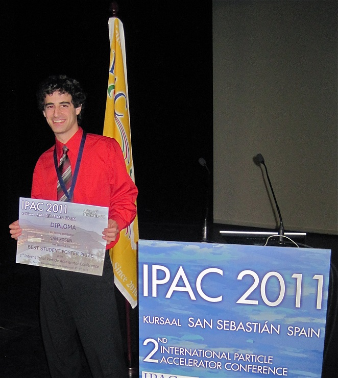
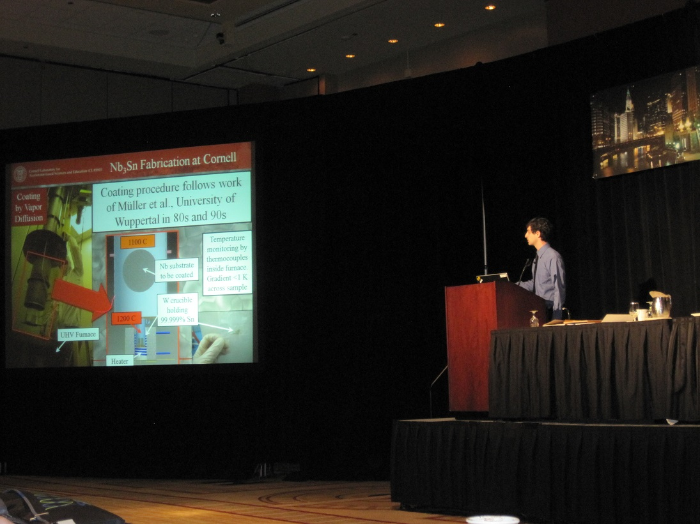
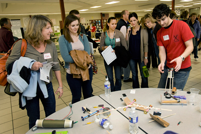
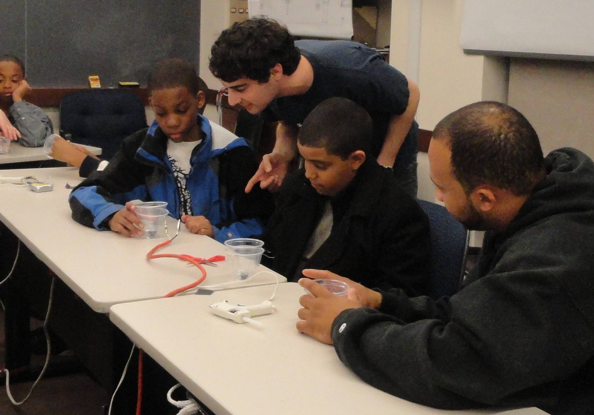
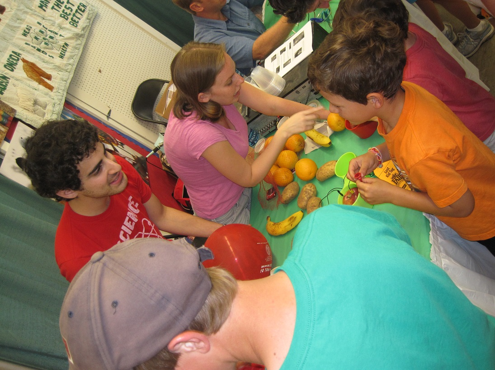

Contact Information
Sam Posen
sep93 at cornell.edu
327 Newman Lab
Cornell University
Ithaca NY 14853
Academic History
- December 2014. Intend to defend Ph.D. thesis.
- January 2013. Attended the US Particle Accelerator School (USPAS), achieving an overall grade of A+.
- July 2012. Completed Admission to Candidacy Exam at Cornell University.
- August 2010. Completed Qualifying Exam at Cornell University.
- Fall 2009. Began study at Cornell University, pursuing Ph.D. in Physics.
- Summer 2009. Began work with Cornell University's Superconducting RF group.
- Spring 2009. Graduated with Engineering Physics Medal from Queen's University with a B.Sc. Engineering Physics (Hons.) 1st Class.
Academic Awards
- Albert Silverman Memorial Award 2014 - Cornell physics department travel grant
- Best Student Poster Prize (one of 2 awardees out of more than 130 competitors) - IPAC 2011
- Most Outstanding Student Poster Award - SRF Conference 2011
- Medal in Engineering Physics - highest average in graduating class
- CAP Prize Exam 2009 - placed 6th in country, 1st in University
Scholarships
- NSERC PGS D - highly competitive fellowship from Canadian Research Council - 2011-2014
- NSF GRFP Honorable Mention - Not awarded fellowship, but was was among top applicants - 2011-2012
- DOE SCGF Finalist - Not awarded fellowship, but was in top 450 of 3200 applicants - 2010-2011
- Cornell University Graduate Fellowship - entrance fellowship for exceptional students - 2009
- NSERC PGS M (from declined CGS M) - highly competitive fellowship from Canadian Research Council - 2009-2010
- Dean's Award - Queen's University Academic Scholarship - 2008-2009
- Kern Partners Ltd. Scholarship - Queen's University Academic Scholarship - 2007-2008
- NSERC USRA - Funding for Summer Studentship at CERN and University of Toronto - summer 2007
- Chair's Scholarship - Scholarship from University of Toronto for being among top summer students applicants - summer 2007
- Achievement Entrance Scholarship - Queen's University Academic Scholarship - 2005-2006
- Principal's Scholarship - Queen's University Academic Scholarship - 2005-2007 Also student support grants from organizing committees of SRF 2011, IPAC 2011, LC 2013, SRF 2013, and NA-PAC 2013 to present materials at the conferences.
Full Time Research Experience
-
July 2009 - Present. Graduate Research Assistant under Matthias Liepe at Cornell University
- Performing experimental and theoretical studies of superconducting RF cavities for particle accelerators
-
May - August 2008. Summer Research Intern at Princeton Plasma Physics Laboratory under Andrew Zwicker (SULI Program)
- Independently performed tests with, repaired, and improved machine for deposition of diamond films
-
May - August 2007. Summer Student at CERN and University of Toronto under Richard Teuscher (USRA Program)
- Helped commission calorimeters and reject irrelevant data in ATLAS detector using cosmic rays
-
June - August 2006. Research assistant for Canadian International Development Agency external evaluator Isla Paterson
- For Non-Government Organization evaluation reports, performed research and calculations, wrote sections, and edited
Current Research Projects
My thesis project for the last five years has been to develop facilities at Cornell to fabricate superconducting RF-quality Nb3Sn surfaces. After making my first excellent Nb3Sn samples three years ago, I designed and built a new apparatus to coat full 1.3 GHz single-cell SRF cavities. Last year, I coated a structure that is now the first alternative material cavity to far outperform niobium at a useful temperature, gradient, and frequency. Now I am investigating the limitation mechanisms that prevent Nb3Sn cavities from reaching their full potential. Experiments that I have been performing include a systematic series of RF tests, as well as sample studies using SEM/EDX, TEM, XPS, and magnetic measurements.
In addition to these experiments, I have been collaborating with Cornell theorists to develop the current understanding of SIS multilayer films. It has been proposed that these sandwiches of thin film superconductors and insulators may allow alternative superconductors to operate at higher RF magnetic fields than they would be able to as an isolated bulk. We hope to determine realistic performance expectations for these structures.
Detailed descriptions and images from selected current and past research projects can be found in the portfolio page.
Capabilities
- Led the program at Cornell for coating cavities with Nb3Sn to increase accelerating gradient decrease surface resistance
- Extensive experience preparing and testing elliptical superconducting RF cavities, including building and commissioning a T-map
- Significant hands-on work designing, assembling, and testing cryomodules (Cornell's five 2-cell cavity ICM and one 7-cell cavity HTC)
- Proficiency in working with and building vacuum systems, cryogenic systems, and devices for data acquisition
- Hundreds of hours of clean room experience, successfully producing apparatuses which require class 10 clean room cleanliness
- Comfortable with sensitive RF and microwave equipment such as vector network analyzers, power meters, and amplifiers
- Highly capable with many technical software packages including Matlab, Labview, Mathematica and Maple, C, Microsoft Office, LaTeX, and comfortable in both Windows and Linux systems
- Expert-level skills with ANSYS simulation package, and working knowledge of SLAC's ACE3P software
- Proficient with 3D modelling tools Inventor and SolidWorks
- Experience in dealing with undesired higher order modes in SRF cavities
Scientific Publications
Scientific Outreach
- In summer 2013, I mentored community college student Fiona Wohlfarth in the Summer Research for Community College Students (SRCCS) program.
- In 2013, I led a Silly Putty activity at Big Red Barn's Kids’ Science Day
- In summer 2012, I mentored community college student Chris Wilson in the Summer Research for Community College Students (SRCCS) program.
- In summer 2011, I mentored community college students Justin Riley and Jordan Shields in the Summer Research for Community College Students (SRCCS) program.
- In October 2011, I helped teach activities at Cornell Teacher Resource Fair
- 
- In 2011, I supervised a half-time undergraduate student helping us to commission a temperature-mapping system.
- In April 2011, I was an "expert" for Cornell's Nano Days, explaining to tour groups how the Cornell Electron Storage Ring (CESR) works
- In November 2010, I helped lead an activity teaching students from NYC PS/MS 282 to build their own speakers
- 
- In summer 2010, I mentored community college student Rocco Cammarere in the Summer Research for Community College Students (SRCCS) program
- From 2009-2014, I led many tours of Cornell's synchrotron for the general public
-

- In January-February 2010, I helped teach middle school students about electric circuits in a four-week after-school program
- In March 2010, I helped teach activities to science teachers at the Cornell Science Sampler Series
- In August 2010, I performed hands-on scientific demonstrations with around 200 children at the NY State Fair
- 
- In 2010-2011, I wrote several contributions for a blog about physics called “The Virtuosi.”